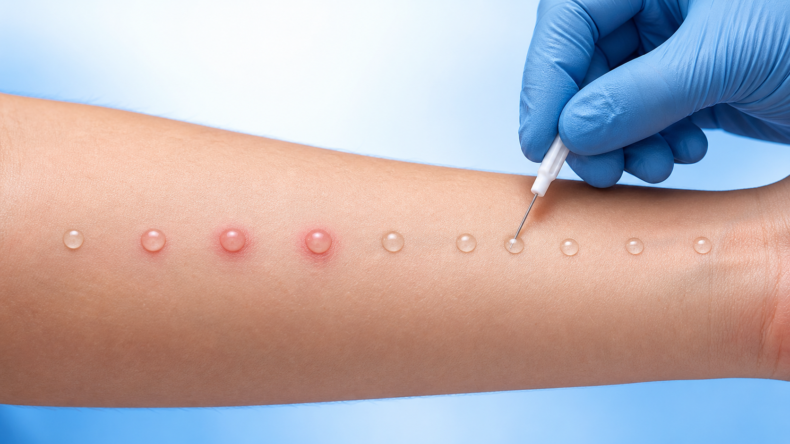
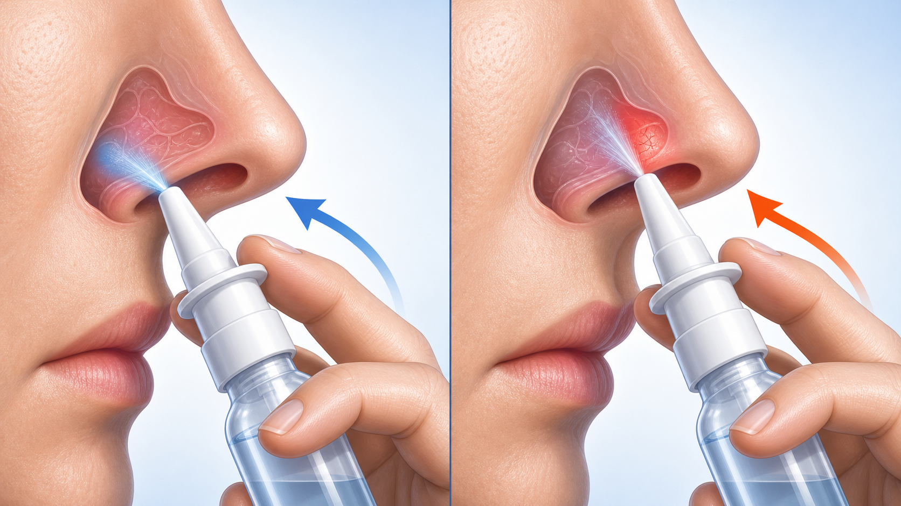

병력 청취가 진단의 기본 — 검사로 원인을 확인
- 병력·증상 양상 — 언제·어디서 심한지, 계절성/통년성, 가족력 확인
- 피부단자검사 — 팔에 알레르겐을 떨어뜨려 반응을 보는 빠른 검사
- 혈청 특이 IgE — 채혈로 어떤 물질에 항체가 있는지 확인 (MAST 등)
- 코 진찰 — 점막 부종·창백, 콧물 양상 관찰. 필요 시 비내시경
대표 검사
피부단자검사
또는 혈청 특이 IgE
감기와의 차이
발열 없음
가려움·재채기·수 주 지속

STEP · 01 · 회피
유발 인자 회피·환경 관리
진드기는 침구를 자주 뜨거운 물로 세탁·건조하고 환기. 꽃가루철엔 마스크 착용, 창문 닫기.
STEP · 02 · 1차 약물
비강 스테로이드 분무 (가장 효과적)
매일 같은 시간 꾸준히 사용. 효과는 수일~2주에 서서히 나타나므로 증상 없어도 지속합니다.

STEP · 03 · 추가
2세대 항히스타민 병합
가려움·재채기·콧물에 도움. 졸음 적은 2세대 사용. 필요 시 류코트리엔 길항제 추가.

STEP · 04 · 핵심
꾸준함이 효과를 결정
증상이 좋아져도 임의 중단하지 말고, 조절 상태에 따라 의사와 용량을 조정합니다.
핵심
비강 스테로이드 분무가 알레르기 비염의 1차이자 가장 효과적인 치료입니다 — 매일 꾸준히 쓰는 것이 가장 중요합니다.
OPTION · A · 1차
비강 스테로이드
- 제형비강 분무 · 매일
- 효과 범위코막힘·콧물·가려움
- 효과 발현수일~2주
- 사용 핵심꾸준히 · 임의중단 X
가장 효과적 · 기본 약물
OPTION · B · 병합
항히스타민
- 2세대 경구졸음 적음
- 비강 분무형빠른 효과
- 효과 범위가려움·재채기·콧물
- 사용 시점증상 시 또는 매일
비강 스테로이드와 병합

OPTION · C · 추가
류코트리엔 길항제
- 제형경구 · 1일 1회
- 특히 유용천식 동반 시
- 역할보조·병합 옵션
- 사용 시점조절 부족할 때
필요 시 병합 추가
코 살짝 풀기
사용 전 코를 가볍게 풀어 분비물을 비우고 통로를 확보합니다.
분무구 ‘귀 쪽’으로
반대쪽 손으로 분무, 분무구를 콧속 바깥쪽(눈 X · 귀 쪽)으로 향합니다.
부드럽게 들이쉬기
세게 들이마시지 말고 부드럽게 코로 숨을 들이쉬어 약이 점막에 닿게.
매일 같은 시간
정해진 시간에 꾸준히. 효과는 며칠~2주에 걸쳐 서서히 나타납니다.

올바름 · 귀 쪽 잘못됨 · 코중격IMMUNO · 01
알레르기 면역치료
설하(혀밑) 또는 피하(주사)로 원인 물질에 서서히 적응시키는 치료. 약물로 조절이 안 될 때 고려합니다.

주의 · 02
충혈 제거 스프레이 남용 금지
코 뚫리는 충혈제거 분무는 3~5일 이상 연속 사용 금지 — 더 심한 반동성 비염을 부릅니다.
CO-DISEASE · 03
동반질환 함께 관리
천식·알레르기 결막염·부비동염·중이염이 함께 올 수 있습니다. 같이 평가·치료하면 효과가 좋습니다.

RED FLAG · 04
다른 질환 의심 신호
한쪽만 코막힘, 코피 섞인 분비물, 심한 안면통, 후각소실 지속 → 물혹·부비동·종양 평가 필요.
중요
위의 ‘다른 질환 의심 신호’가 있으면 단순 알레르기 비염으로 넘기지 말고 꼭 진료받으세요.